Smoke
Density Channel
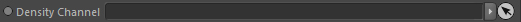
The channel to render as smoke. It can be any scalar channel.
This node is required.
Fluid Dynamics
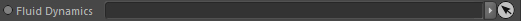
Takes a fluid dynamics node to allow render advection. This node is optional.
The Advection setting is activated once linked.
Advection

During rendering the channel data can be advected resulting in way sharper and more details.
Setting this too high may result in artefacts though.
The value is given as a percentage of a second (e.g 10% are 0.1 seconds).
Smoke::Color
Here you can define a color for your smoke in rendering.
Be aware that the absorption of color is also based on this color. So a red value does not necessarily result in red smoke (the sun seems yellow but air particles scatter and absorb the light depending on its wavelength so that the sky is blue in the end, because the other colors are absorbed and scattered differently).
A preview of the actual shaded color is given in the self-shadowing options named Preview.
Be aware that the absorption of color is also based on this color. So a red value does not necessarily result in red smoke (the sun seems yellow but air particles scatter and absorb the light depending on its wavelength so that the sky is blue in the end, because the other colors are absorbed and scattered differently).
A preview of the actual shaded color is given in the self-shadowing options named Preview.
Color Channel
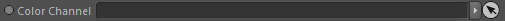
Takes a vector channel filled with according color values. This node is optional.
You could create such a vector channel in simulation (beside the smoke channel), emit color values (with a grid emitter) and let it be advected
by the fluid simulation just as the scalar smoke channel does.
Mapping
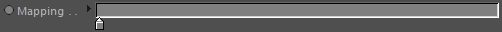
Only used if no color channel is linked.
Defines the color of the smoke based on the density channel values (the density values are already
modified by the Density Mapping at this point).
The mapping range is defined by the density channel
Minimum Value and
Maximum Value settings.
Smoke::Density
The density defined by the Density Channel
can be modulated with the following settings and allow to give the smoke its main appearance.
The density of smoke is always mapped between 0.0 and 1.0 (after the density mapping took place), defined in kilogramm per cubic meter (kg/m³)
It must be noted that smoke in the real world may have a higher maximum density of (~8.0 kg/m³ is a good reference value), in order to achieve this please use the density multiplier setting. Although this fact is most probably only of real interest if you also use real world optical properties.
Btw instead of trying to get a certain look by modifying the simulation, you should rather rely on the density settings to alter the density distribution. It's very valueable setup time you save.
The density of smoke is always mapped between 0.0 and 1.0 (after the density mapping took place), defined in kilogramm per cubic meter (kg/m³)
It must be noted that smoke in the real world may have a higher maximum density of (~8.0 kg/m³ is a good reference value), in order to achieve this please use the density multiplier setting. Although this fact is most probably only of real interest if you also use real world optical properties.
Btw instead of trying to get a certain look by modifying the simulation, you should rather rely on the density settings to alter the density distribution. It's very valueable setup time you save.
Multiplier
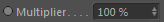
This is a linear multiplier for the density values.
The density maximum is 100% (1kg/m³), even if your channel has higher values the render channel internally created will remap the data to the 0-1 range.
However, with the density multiplier you can increase the density to go beyond 100%. The advantage is that you can create thicker smoke while keeping the general properties (like brightness for example).
Mapping
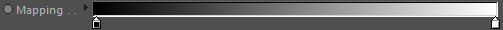
Remaps the smoke density values.
The mapping range is defined by the density channel
Minimum Value and
Maximum Value settings.
Constraints
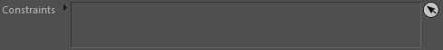
Allows to control the amount of density by using constraints.
This effectively allows to modify the density arbitrarily in time and space...fully multithreaded.
See Constraints for more information.
Blur iterations
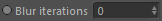
Defines the amount of blurring passes performed on the density channel data.
Blur amount
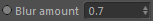
Defines the strength (length of falloff kernel) of the blurring per iteration. The value is given in grid cell/voxel size.
The rendering may have a much higher resolution than the smoke voxels and therefore unpleasing blocky appearance may be visible. You can counteract these sharp blocky features by simply diffuse the smoke render grid.
This allows for smoother transitions of the smoke, but also results in less details. As blurring is an iterative process and can be slow for large values, this should always be used with caution and sensible values.
Smoke::Noise
Here you can define a noise that will be applied to the density channel data before rendering.
It is almost the same as using a Noise constraint in the above Constraints list.
Most of the settings are equal to the Cinema 4D noise settings and we refer you to the Cinema 4D help for these entries for a detailed description.
That's why we only list the settings here that are not C4D specific.
It is almost the same as using a Noise constraint in the above Constraints list.
Most of the settings are equal to the Cinema 4D noise settings and we refer you to the Cinema 4D help for these entries for a detailed description.
That's why we only list the settings here that are not C4D specific.
Space
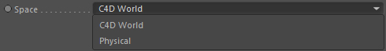
Defines in which space the noise should be evaluated.
C4D World
The noise is evaluated in Cinema 4D world space units.
Physical
The noise is evaluated in physical simulation space which is defined automatically
by the linked Density Channel.
Mapping
Allows to remap the noise with a gradient. It allows to modulate the noise with much more control
than using the contrast, brightness etc. settings (though they are great for quick adjustments).
The mapping range is defined by the density channel
Minimum Value and
Maximum Value settings.
Smoke::Scattering
Defines the thickness (or opacity) and brightness by the following settings.
As smoke has the property of being transparent in a special way the optical properties, so the way we visually perceive the appearance of smoke, are tremendously important for rendering.
The smoke's appearance can be described as being the sum of several scattering and absorption events.
When a light ray passes through a smoke cloud, the light is scattered by the smoke particles and some of the light scatters into the direction of the viewer (so to the camera). This determines the brightness of the smoke (luminance, albedo).
The probability of the light being scattered into a certain direction is determined with a so-called phase function (Phase). For ease of comprehension you could compare it to the Cinema 4D Fresnel shader, which mimics light reflectance dependent on the viewing angle.
If the light scatters into the direction of the camera then this is called forward-scattering. If it scatters away from the camera view this is called back-scattering. You can control this behavior with the (anisotropy) value.
However, light is also absorbed by the smoke particles, which determines the darkening and opacity of the smoke (absorption). Smoke particles are also emitting light due to the interaction with light (emission).
All these settings form the optical properties of the smoke. Always keep in mind that these optical properties are evaluated at each sample position! So at each step along the ray.
As smoke has the property of being transparent in a special way the optical properties, so the way we visually perceive the appearance of smoke, are tremendously important for rendering.
The smoke's appearance can be described as being the sum of several scattering and absorption events.
When a light ray passes through a smoke cloud, the light is scattered by the smoke particles and some of the light scatters into the direction of the viewer (so to the camera). This determines the brightness of the smoke (luminance, albedo).
The probability of the light being scattered into a certain direction is determined with a so-called phase function (Phase). For ease of comprehension you could compare it to the Cinema 4D Fresnel shader, which mimics light reflectance dependent on the viewing angle.
If the light scatters into the direction of the camera then this is called forward-scattering. If it scatters away from the camera view this is called back-scattering. You can control this behavior with the (anisotropy) value.
However, light is also absorbed by the smoke particles, which determines the darkening and opacity of the smoke (absorption). Smoke particles are also emitting light due to the interaction with light (emission).
All these settings form the optical properties of the smoke. Always keep in mind that these optical properties are evaluated at each sample position! So at each step along the ray.
Ambient
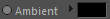
This is an ambient illumination value that is added to the result nearly independant of the illumination equations.
Absorption
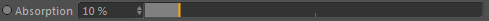
The absorption coefficient defines how the light is absorbed by the smoke density.
Higher values result in the smoke to appear thicker and more dense (more opaque) but also darker (if backlit) or brighter (if front lit)
while lower values result in the smoke to appear very thin or foggy.
Luminance
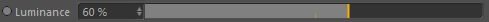
Defines how much light is scattered into the direction of the used camera.
Higher values result in brighter smoke.
Phase

A phase function defines in which direction light can scatter.
Different types of particles scatter light differently. Some scatter it more biased to a certain direction (anisotropic), some more into all directions (isotropic).
But that's why the phase function is a core ingredient to realistically render smoke (and other gaseous participating media).
It's worth taking some time adjusting the following values.
To make it easier to understand this setting, please think of the moon. Yes, the moon. Because the moon phases (half moon etc.) is where this function got its name from.
And it works like the moon phases. Imagine a single small smoke particle. When light comes from the left it interacts with the particle and the particle scatters light, just like the moon. That's the bright part of the moon.
The phase function specifies this scattering (phase), how big it is, what shape it has and how much light is scattered into the direction of the camera.
These are the available phase functions:
Isotropic
The light is scattered in all directions with the same amount
Henyey-Greenstein and Henyey-Greenstein Nishita
Useful for smoke in general with different light distributions. Good approximation of Mie scattering.
Double Henyey-Greenstein
This allows to control the scattering with two Henyey-Greenstein phases
and gives more control by evaluating one phase for backscattering and one for forwardscattering
Rayleigh
Useful for thin (cigarette) smoke
Mie
Useful for puffy media like clouds
Hazy
Useful for hazy scenarios
Murky
Useful for murky scenarios
Schlick
A variation of the Henyey-Greenstein phase, so also useful for smoke
Anisotropy
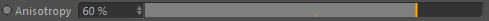
Defines how strong the smoke scatters light anisotropically (so biased to a certain direction). It is the probability of light reaching the camera.
This is a property of the smoke particle and depends on the incoming light and the viewers direction
(so changes to lights or view will give different results. That's why sometimes in real life you cannot see thin smoke until you change your position).
Intensity
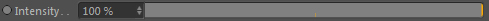
The overall intensity of the phase function.
Smoke::Constraints
In these linkfields you can control several scattering features with constraints.
Absorption
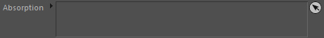
Controls absorption in space and time.
Luminance
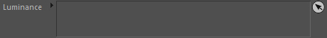
Controls luminance in space and time.
Anisotropy
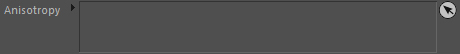
Controls anisotropy in space and time.
Intensity
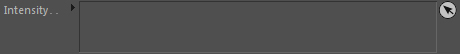
Controls intensity in space and time.
Smoke::Multiple Scattering
A particle scatters light into the direction of the camera. That is called single scattering.
However, it is not only scattering into this one direction (according to the phase function). A smoke particle also scatters light into other directions.
This light then also hits other particles which again scatter light in several directions and probably also again into the direction of the camera. And this happens thousands and millions of times inside of a participating medium such as smoke (depending on the absorption and scattering properties and of course the phase function!).
This is called multiple scattering. However calculating each scattering event would definetly be a performance killer. That's why Effex uses a quicker but still physical based algorithm to calculate multiple scattering..
Multiple scattering is most prominent in low density smoke. Very thick smoke does not encounter much multiple scattering (light is absorbed so fast that it's visually neglectable) so it is worth checking out before final rendering if it's really necessary to use multiple scattering.
As this is a physical based algorithm it works best with real world optical properties. Multiple Scattering requires additional memory and render time.
However, it is not only scattering into this one direction (according to the phase function). A smoke particle also scatters light into other directions.
This light then also hits other particles which again scatter light in several directions and probably also again into the direction of the camera. And this happens thousands and millions of times inside of a participating medium such as smoke (depending on the absorption and scattering properties and of course the phase function!).
This is called multiple scattering. However calculating each scattering event would definetly be a performance killer. That's why Effex uses a quicker but still physical based algorithm to calculate multiple scattering..
Multiple scattering is most prominent in low density smoke. Very thick smoke does not encounter much multiple scattering (light is absorbed so fast that it's visually neglectable) so it is worth checking out before final rendering if it's really necessary to use multiple scattering.
As this is a physical based algorithm it works best with real world optical properties. Multiple Scattering requires additional memory and render time.
Activate
Turn on/off multiple scattering contributions.
Homogeneous density
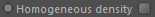
If you have a homegenous media (a constant density throughout the whole render grid) activate this setting. It calculates the multiple scattering contribution very quickly. Useful for example to render uniform haze.
Voxel Scale
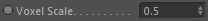
Internal channels are created that are used for calculating the multiple scattering maps and this defines the resolution
based on the voxel size of the Density channel. A value of 0.5 will half the resolution (double the voxel size).
This is useful to speed up the rendering especially when high resolutions are rendered.
Blurring
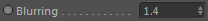
The scattered light diffusion. The more often light has been scattered in the medium the more prominent this diffusion value becomes.
Minimum Contribution
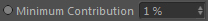
The minimum scattered light contribution that should be taken into account.
Use Global
If activated it uses the global step size setting of the gas renderer.
Otherwise the Step Size setting below can set a custom step size. Most of the time not necessary though.
Step size

This is the initial step size. As the algorithm uses an adaptive step size once it started calculating this has only little impact on the performance but lower values may get rid of appearing banding artefacts.
Space Scaling
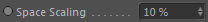
Allows to rescale the light space in order to fake a smaller light traveling space and therefore more scattered light energy is preserved.
Use Global
Uses the global Scattering::Absorption setting if activated. Otherwise you can define a custom absorption coefficient.
Absorption
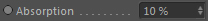
The light absorption. Higher values result in less light contribution.
Anisotropy
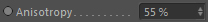
Defines how strong the smoke scatters light anisotropically (so biased to a certain direction). It is the probability of light reaching the camera.
This is a property of the smoke particle and depends on the incoming light and the viewers direction
(so changes to lights or view will give different results. That's why sometimes in real life you cannot see thin smoke until you change your position).
Phase Intensity
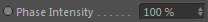
This defines the intensity of the Scattering::Phase function, which is also used in multiple scattering.
It does not affect the single-scattering result.
Scattering
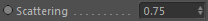
The amount of scattering. Higher values will result in the scattered light being spread in wider angles.
Path length scale
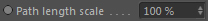
Allows to rescale the path length taken to mimic different scales.
Lowering this value can create great luminant volume scattering effects.
Auto scattering angle
The mean scattering angle is automatically calculated.
Mean Scattering Angle
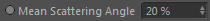
The mean scattering angle given as a percentage of 360°. This is a medium specific property that determines how the particle of that medium scatters light generally. Higher values result in more light contribution as light is scattered "wider" from a particle.
Smoke::Constraints
Here you can control multiple scattering features with constraints in space and time.
Scattering
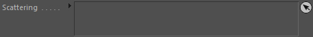
Controls scattering in space and time.
Path length scale
Controls path length in space and time.
Anisotropy
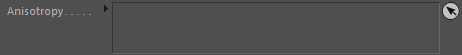
Controls anisotropy in space and time.
Intensity
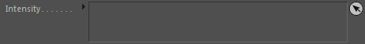
Controls intensity in space and time.
Smoke::Self-Shadowing
Holds settings for the self shadowing (compareable to the shading within a normal C4D Material) of the smoke. Actually the self-shadowing is linked to the absorption coefficient of the smoke (see optical properties) but Effex allows you to have a custom coefficient for the self-shadowing.
The self-shadowing is pre-calculated into the Self-Shadow Grid and therefore the settings affect the preprocessing time at each frame.
The self-shadowing is pre-calculated into the Self-Shadow Grid and therefore the settings affect the preprocessing time at each frame.
Precise integration
The light equations for a participating media and all the absorption and scattering integration
is more precise with this (trapezoidal) integration and results in sharper effects.
Jittering
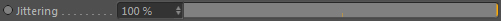
The rays that the shader marches along could end in
banding artefacts if a big step lengths are used.
This jitters the ray in order to get rid of banding. It gives a more noisy result
which is not as troubling to the viewer as the banding and it can be smoothed in compositing by noise reduction.
Min. Step Length
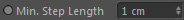
The minimum step length that should be used during adaptive shadow ray marching.
Max. Step Length
The maximum step length that should be used during adaptive shadow ray marching.
Artistic Coloring
Usually when light colors interact in a participating medium, absorption and scattering result in the self-shadows to not
be the color of the light or smoke. Activating this option will give a more artistic result, trying to mimic the set color instead of the physically correct one.
Color
The absorption given as a color. You can define that way which color is absorbed more or less.
Preview
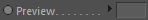
By absorbing and scattering light, different colors than expected can happen.
This gives an approximate preview of the resulting color. It cannot be changed.
The settings affecting this color-preview are the smoke Color and the self-shadowing Color.
Absorption
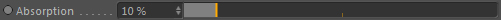
The absorption coefficient defines how the light is absorbed by the smoke density.
Higher values result in the smoke self-shadows to appear thicker and more dense (more opaque).
Constraints
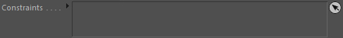
You can use constraints to control the absorption coefficient for self-shadowing in time and space.
Smoke::Self-Shadow Grid
This integrates a light map, which is a variation of a deep shadow map, to be used for precomputing and therefore speeding up the rendering considerably.
The light map is comparable to a Shadow map in Cinema 4D. It precalculates the lighting of the smoke to allow for faster renderings. However, the light map in Effex is a 3D grid (unlike Shadow maps in C4D which are 2D) that's why this makes it very flexible to use (for example it allows to include the self-shadowing of the smoke).
However, of course as it is precalculated and has an explicit resolution, it is less accurate than light-shadow calculations that are done on the fly (though it is not THAT different which makes it so feasible to use beside the enormous speedup that is gained).
A light map requires additional memory in RAM, so you might want to keep track of the Voxel Scale.
The light map is comparable to a Shadow map in Cinema 4D. It precalculates the lighting of the smoke to allow for faster renderings. However, the light map in Effex is a 3D grid (unlike Shadow maps in C4D which are 2D) that's why this makes it very flexible to use (for example it allows to include the self-shadowing of the smoke).
However, of course as it is precalculated and has an explicit resolution, it is less accurate than light-shadow calculations that are done on the fly (though it is not THAT different which makes it so feasible to use beside the enormous speedup that is gained).
A light map requires additional memory in RAM, so you might want to keep track of the Voxel Scale.
Voxel Scale
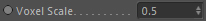
Defines the resolution of the self-shadow grid. Lower values result in a lower resolution.
Extrapolation [voxels]
Extrapolates light map values into areas outside the actual smoke region (for interpolation reasons).
Values between 1-2 make most sense.
Blur Iterations

You can blur the light map for rendering.
This allows for smoother transitions of the light (also the overall brightness of the light map is reduced), but also results in less details.
Blurring is in general a slow process but it can generate very nice light map scenarios and even fake multiple scattering events to a certain degree. The blurring operation can be applied iteratively and this defines the amount of iterations.
Blur amount
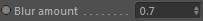
Defines the strength (length of falloff kernel) of the blurring per iteration. The value is given in grid cell/voxel size.
As blurring is an iterative process and can be slow for large values, this should always be used with caution and sensible values.
Smoke::Shadows
Holds settings for the generation of shadows from smoke.
Receive

Turn on/off if the smoke shall receive shadows from other objects in the scene.
Density
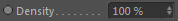
The resulting shadow density.
Color
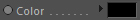
The color of the received shadow.
Cast
Turn on/off if the smoke casts shadows onto other objects in the scene.
Note:
Hard Shadows and Area Shadows are fully supported. Soft Shadows (Shadow maps) have restricted support. Shadow maps in C4D require geometry to be calculated and do not support volumetrics.
So you need any geometry behind the smoke (for example a floor under the smoke) to let the shadow maps calculate shadows and then the smoke is also taken into account.
Intensity
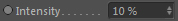
The density of the casted shadows.
Jittering
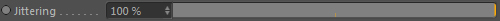
The shadow rays that the shader marches along could end in banding artefacts if big step lengths are used.
This jitters the ray in order to get rid of banding. It gives a more noisy result
which is not as troubling to the viewer as the banding and it can be smoothed in compositing by noise reduction.
Min. Step length
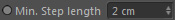
The minimum step length that should be used during adaptive shadow ray marching.
Max. Step length
The maximum step length that should be used during adaptive shadow ray marching.

Color
The color of the casted shadow.
Smoke::Renderer
Controls which rendering features see the gas renderer.
Visible for Camera

Gas Renderer is visible for the camera view.
Visible for GI
Gas renderer is visible for Global Illumination.
Visible for Transparency
Gas Renderer is visible behind transparent objects.
Visible for Refraction
Gas Renderer is visible in refractions.
Visible for Reflection
Gas Renderer is visible in reflections.
Visible for AO
Gas Renderer is visible to Ambient Occlusion..